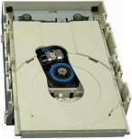

Optical drives include CD drives and DVD drives.
In Windows, drives are denoted by letters followed by colons. Hard drives start at C: and use subsequent letters (if needed). Optical drives typically use the next available letter, so common letters used for optical drives include D: or E:, depending on the setup of the specific system.
